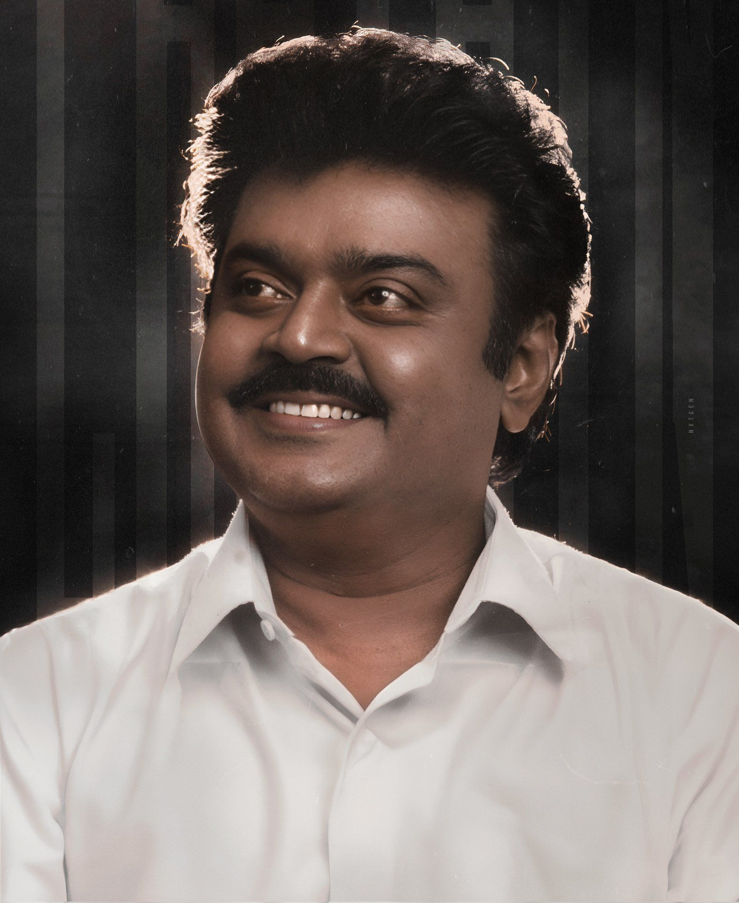
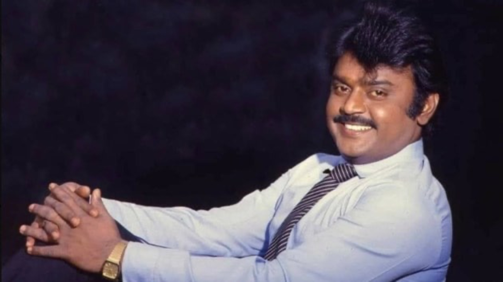

Vijayaraj Alagarswami (25 August 1952 – 28 December 2023), known by his stage name Vijayakanth, was an Indian actor, film director, film producer, philanthropist and politician. He primarily worked in Tamil cinema in a career spanning four decades. Vijayakanth is one of the popular stars of Tamil cinema and he has delivered over 150 films. The seasoned actor has worked with several directors and shared screenspace with stars across generations. The star, who has no Godfathers in cinema created a space for himself with his immense hard work.Vijayakanth acted in over 150 films in his career. Some of his popular films include Vaidehi Kathirunthal (1984), Amman Kovil Kizhakale (1986), Poonthotta Kaavalkaaran (1988), Senthoora Poove (1988), Pulan Visaranai (1990), Chinna Gounder (1992), Honest Raj (1994), Thayagam (1996) and Vaanathaippola (2000).He was nicknamed "Captain" following his role in the film Captain Prabhakaran (1991). He was also credited as "Puratchi Kalaignar" (revolutionary artist) in the film titles as he often appeared in roles as a law enforcer, vigilante, or a village head.[6] He won two Filmfare Awards South, three Tamil Nadu State Film Awards and was awarded the Kalaimamani title in 2001.[7] Vijayakanth served as the president of the Nadigar Sangam (actors association) from 2000 to 2006. He is credited with bringing the association out of debt and establishing a charitable trust that paid pension to low-income members of the film industry.He was likened to former Tamil Nadu Chief Minister M. G. Ramachandran for his humanitarian work and for his role in supporting impoverished personnel from the Tamil film industry.[10] He accepted deferred remuneration for certain films to help struggling film producers and also preached for food equality on film sets, demanding that all the crew members must be given the same quality meals that he was served. After founding his own party in 2005, he served as a Member of Legislative Assembly for two terms from 2006 to 2016, representing the constituencies of Virudhachalam and Rishivandiyam respectively. He led his party to win the second-most seats in the 2011 Tamil Nadu Legislative Assembly election and served as the leader of the opposition in the Tamil Nadu Legislative Assembly from 2011 to 2016. He remained as the leader of his party until his death in 2023. was known for his "open and bold stance" during his political career.In January 2024, he was posthumously awarded India's third-highest civilian honour, the Padma Bhushan, by the Government of India.
Vijayakanth
The man of simplicity

Movie name En aasai machaan
The most block buster movie in his carrier

Natural image
The man of humanity

Image after entered politics
The man who is entering politics to serve purely to the people